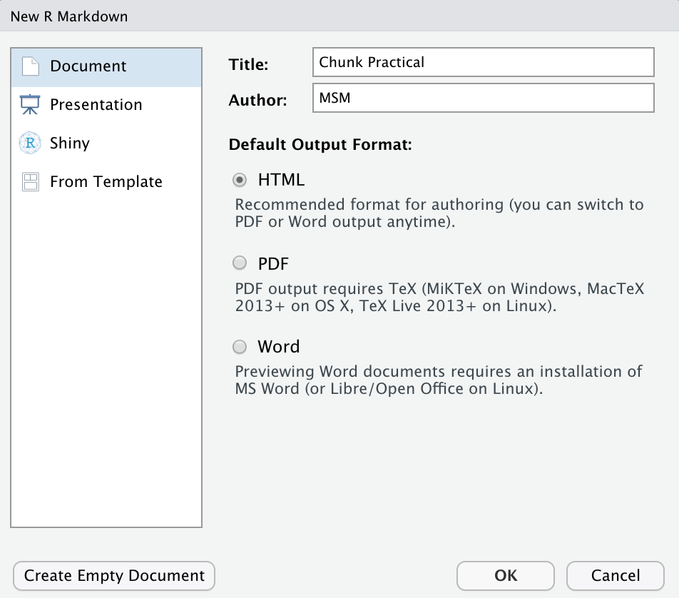

Mit Chunks umgehen
|
Reporting mit R The R Bootcamp |

|

from www.nestle.com
Überblick
In diesem Practical wirst Du verschiedene Chunk Einstellungen mit dem AirBnB Datensatz üben.
Am Ende des Practicals kannst du:
- Chunks nach deinen Wünschen konfigurieren
- Verschiedene Arten von Inhaltsverzeichnissen einbauen
- Tabellen erstellen und gestalten
Aufgaben
A - Setup
Öffne dein
TheRBootcampR Projekt. Es sollte die Ordner1_Dataund2_Codeenthalten. Stelle sicher, dass du alle Datensätze, welche imDatensätzeTab aufgelistet sind, in deinem1_DataOrdner hast.Öffne ein neues RMarkdown Skript und wähle das Template “Document” aus (siehe screenshot unten).

Trage bei Title “Chunk Pactical” und deinen Namen ein.
Speichere das neue Skript unter dem Namen
markdown2_practical.Rmdim2_CodeOrdner.Lösche alles unterhalb des
setupR chunks.
B - airbnb Datensatz und Inhaltsverzeichnis anzeigen
- Wir wollen ein Inhaltsverzeichnis angezeigt bekommen. Im YAML header müssen
wir also die Optiontocauf TRUE setzen
output:
html_document:
toc: XXX- Füge im
setupchunk die librariestidyverse()undkableExtra()ein
{r setup, include=FALSE}
knitr::opts_chunk$set(echo = TRUE)
library(XXX)
library(XXX)- Lade den Datensatz
airbnb.csvals Objektairbnbimsetupchunk aus dem Ordner 1_Data.
{r setup, include=FALSE}
knitr::opts_chunk$set(echo = TRUE)
library(XXX)
library(XXX)
airbnb <- read_csv("../XXX/XXX")- Erstelle einen neuen Chunk und zeige mit Hilfe der
summary()Funktion eine Zusammenfassung desairbnbDatensatzes an. Es soll die Funktion und das Output angezeigt werden!
{r}
summary(XXX)C - Die richtige Wohnung finden
- Wir wollen nun herausfinden welche Wohnung eine Kaffeemaschine, einen Geschirrspüler und Wifi hat (alles was man zum Leben braucht). Dafür wählen wir zuerst die drei Variablen aus (Kaffeemaschine, Geschirrspüler, Wifi).
{r}
XXX %>%
select(XXX, XXX, XXX)- Jetzt erstellen wir eine neue Variable
hat_allesin der wir die drei Variablen addieren.
{r}
XXX %>%
select(XXX, XXX, XXX) %>%
mutate(hat_alles = Kaffeemaschine + Geschirrspüler + Wifi)- Schliesslich wollen wir nur das Ergebnis im HTML file sehen (ohne Code)
{r echo = XXX}
XXX %>%
select(XXX, XXX, XXX) %>%
mutate(hat_alles = XXX + XXX + XXX)- Wieviele Wohnungen mit allen 3 Annehmlichkeiten gibt es? Code und Ergebnisse anzeigen!
{r echo = XXX}
XXX %>%
select(XXX, XXX, XXX) %>%
mutate(hat_alles = XXX + XXX + XXX) %>%
count(hat_alles)- Nun wollen wir noch die Darstellung verbessern. Dazu speichern wir unseren dataframe zuerst in ein neues Objekt
vorhandenab. Dann schicken wir dieses Objekt in die Funktionkable()
{r echo = XXX}
vorhanden <-
XXX %>%
select(XXX, XXX, XXX) %>%
mutate(hat_alles = XXX + XXX + XXX) %>%
count(hat_alles)
kable(vorhanden) - Im nächsten Schritt werden wir die Namen der Spalten von
hat_allesundnin etwas sinnvollerers ändern. Die Spalten sollen neu:KriteriumundAnzahlheissen.
kable(vorhanden,
col.names = c('XXX', 'XXX'),
)- Jetzt noch die Breite der Tabelle reduzieren und die Schriftgrösse erhöhen - hier ist
kable_stylinghilfreich.
kable(vorhanden,
col.names = c('XXX', 'XXX'),
) %>%
kable_styling(full_width = XXX, font_size = XXX)Beispiele
library(tidyverse)
library(cstab)
library(dbscan)
library(mclust, mask.ok = F)
# Beispieldatensatz
data(mpg)
# Verarbeitung des Datensatzes
mpg <- mpg %>% select_if(is.numeric)
mpg_stand <- mpg %>%
scale %>% # Standardisieren
as_tibble()
# k-means -----
# Finde Cluster
mpg_km <- kmeans(mpg_stand,
centers = 3)
# Zeige Zentroide
mpg_km$centers
# k-selection -----
# Zeige Binnenvarianz Verlauf
km_verlauf <- purrr::map(2:20, kmeans, x = mpg_stand)
binnenvarianz <- purrr::map_dbl(km_verlauf,
`[[`, i = 'tot.withinss')
# Plotte die Binnenvarianz
plot(binnenvarianz)
# Gap & Slope Statistik
k_est <- cDistance(as.matrix(mpg_stand),
kseq = 2:20)
k_est$k__Gap
k_est$k_Slope
# Cluster stability
k_est <- cStability(as.matrix(mpg_stand),
kseq = 2:20)
k_est$k_instab
# DBSCAN -----
# Finde Cluster
mpg_dbscan <- dbscan(mpg_stand, eps = 1)
# Zeige Zentroide
mpg %>%
mutate(cl = mpg_dbscan$cluster) %>%
group_by(cl) %>%
summarize_all(mean)
# Gaussian Mixtures -----
# Finde Cluster
mpg_gm <- Mclust(mpg)
# Zeige Zentroide
mpg %>%
mutate(cl = mpg_gm$classification) %>%
group_by(cl) %>%
summarize_all(mean)
# Plotte Cluster
plot(mpg_gm, what = 'classification')
# Vergleiche Cluster -----
table(mpg_km$cluster, mpg_dbscan$cluster)
table(mpg_km$cluster, mpg_gm$classification)
table(mpg_dbscan$cluster, mpg_gm$classification)Datensätze
| Datei | Zeilen | Spalten |
|---|---|---|
| airbnb.csv(https://raw.githubusercontent.com/therbootcamp/RmR_2020Jun/master/_sessions/Markdown2/1_Data/airbnb.csv | 9868 | 33 |
airbnb.csv
Der airbnb …. XXX Datensatz ist ein Ausschnitt des Öffentlich verfügbaren Credit Card Dataset. Der Datensatz beinhaltet 8 Features, die einen Auschnitt des Verhaltens von 8636 Kreditkartenkunden beschreiben.
| Variable | Beschreibung |
|---|---|
| BALANCE | Verfügbares Guthaben |
| BALANCE_FREQUENCY | Änderungsfrequenz des Guthabens (1 = häufig, 0 = selten) |
| PURCHASES | Summe der Einkäufe |
| CREDITLIMIT | Kreditlimit der Karte |
| ONEOFFPURCHASES | Betrag der grössten einmaligen Zahlung |
| MINIMUM_PAYMENTS | Minimale Konto-Ausgleichszahlung |
| PRCFULLPAYMENT | Prozent vollständige Konto-Ausgleichszahlung |
| TENURE | Dauer des Kundenverhältnisses |
Funktionen
Paket
| Paket | Installation |
|---|---|
tidyverse |
install.packages("tidyverse") |
Funktionen
Clustering
| Funktion | Paket | Beschreibung |
|---|---|---|
kmeans() |
stats |
Clustere die Daten mit k-means |
dbscan() |
dbscan |
Clustere die Daten mit DBSCAN |
Mclust() |
mclust |
Clustere die Daten mit Gaussian Mixtures |
k-selection
| Funktion | Paket | Beschreibung |
|---|---|---|
cDistance() |
cstab |
Identifiziere k mit distanzbasierten Methoden, z.B., der Gap Statistik. |
cStability() |
cstab |
Identifiziere k mit stabilitätsbasierten Methoden. |
Materialien
Dokumentation
- Eine gutes Tutorial über k-means und hierarchisches Clustering.